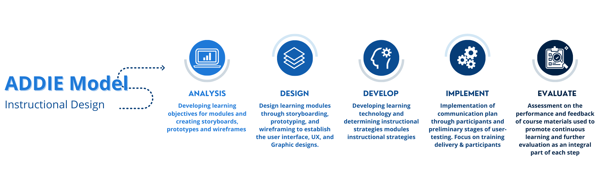

Digital Health Literacy — Program Case Study
The UBC Digital Emergency Medicine is a personal program design project is a digital course helping seniors identify quality health information online. The purpose of this course is to better equip seniors on how to properly evaluate the quality of health information and improving health literacy. With all of the challenges our community is currently facing due to the COVD-19 outbreak, our seniors are most vulnerable to misleading and unreliable health information from non-credible health-related websites. I wanted to approach this personal project to make the platform user-friendly and promote the health of seniors and the health of their communities.
My Role
Instructional Design
eLearning Developer
Graphic Design
Storyboarding & Wireframing
Tools
Articulate 360
Adobe Illustrator
Duration
March 2021 - 5 days
Goal
Working as a Communications and Marketing Associate for the UBC Digital Emergency Medicine faculty of Medicine, I helped the program planning team create infographics for the Train the Trainer program. This program helps prepare trainers to teach and educate their communities on properly evaluating health literacy practices. As an associate, I decided to transform this workshop into an online course to introduce a series of learning paths to develop our trainers and become strong facilitators. The purpose of providing an online system is to refresh our trainer's knowledge and improve their skills in identifying quality information online through quizzes and interaction eLearning.
Design Process
As a designer, I challenged myself to design the course's interface to optimize a two-sided learning model within five days. Starting the journey with optimizing the trainer experience.
Wireframe

eLearning Interactive Course
Evaluation
After further evaluation, I would like to take this case study beyond the preliminary stages and reach out to participants to participate in user-testing. After creating the program's framework and structure, I would like to implement the participation side to develop a course available to different learners according to their position.
Research and Resources
The research was completed by the fantastic Digital Emergency Medicine program planning team, which can be found here. Additional resources used for this case study are listed below.
– Digital Emergency Medicine - How to Identify High Quality Health Information Online